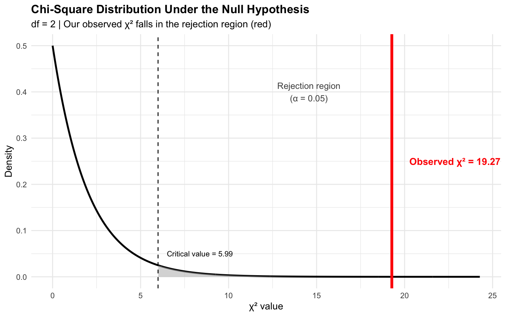
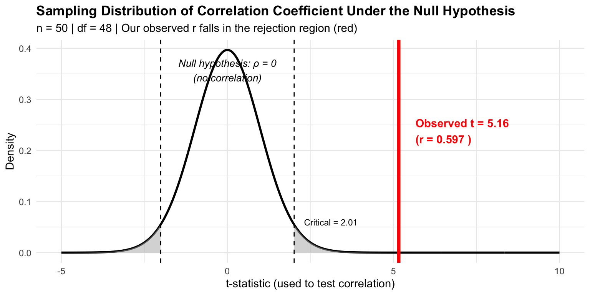
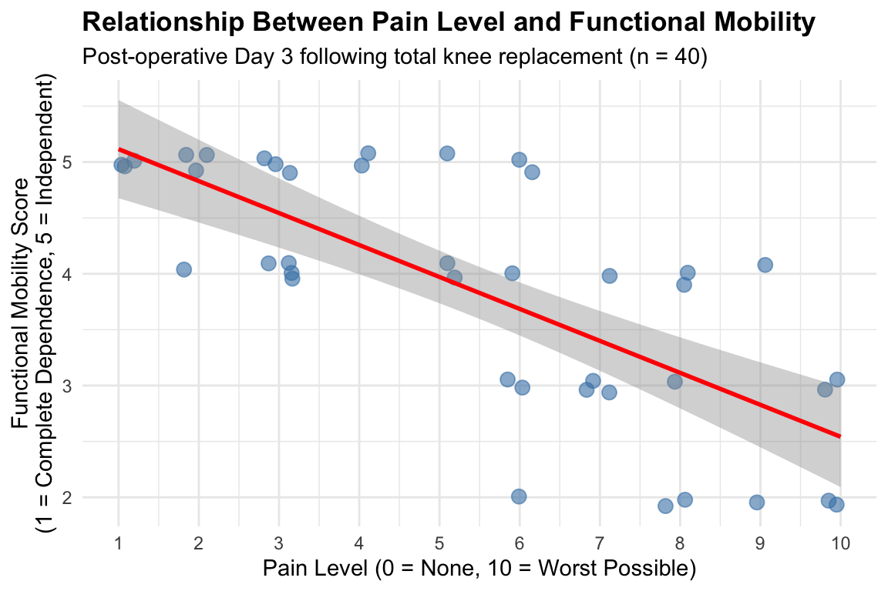

| No-show | Attended | |
|---|---|---|
| Medicare | 15 | 35 |
| Private | 25 | 25 |
Crosstabulation and Correlation
MBA642: Business Analytics in Healthcare Management
Introduction
In previous sessions (Week 5 and Week 6), we learned how to compare means across groups using t-tests and ANOVA. These tests examined bivariate relationships between:
- A categorical independent variable (grouping factor)
- A continuous dependent variable (outcome measure)
For example:
- t-test: Does patient satisfaction (continuous) differ by hospital location (2 categories)?
- ANOVA: Do wait times (continuous) differ across four departments (4 categories)?
This week, we expand our analytical toolkit to examine two additional types of bivariate relationships:
- Two categorical variables: Crosstabulation (Chi-square test)
- Two continuous variables: Correlation (Pearson or Spearman)
New Questions, New Methods
The methods we’ve learned so far cannot answer certain important healthcare management questions:
Crosstabulation addresses questions like:
- Is there an association between insurance type (categorical) and readmission status (categorical)?
- Insurance type: Medicare, Medicaid, Private (discrete categories)
- Readmission status: Readmitted, Not Readmitted (discrete categories)
- Do surgical approach (categorical) and complication occurrence (categorical) appear related?
- Surgical approach: Minimally Invasive, Open Surgery (discrete categories)
- Complication occurrence: Yes, No (discrete categories)
- Is shift schedule (categorical) associated with incident type (categorical)?
- Shift schedule: Day, Evening, Night (discrete categories)
- Incident type: Medication Error, Patient Fall, Pressure Injury (discrete categories)
Correlation addresses questions like:
- As nurse staffing levels (continuous) increase, do patient satisfaction scores (continuous) change?
- Nurse staffing: 6.2, 7.8, 9.1, 10.5 hours per patient day (measured on a continuous scale)
- This is a staffing ratio: total nurse hours worked ÷ patient census for the unit
- Satisfaction scores: 72, 85, 91, 88 on a 0-100 scale (measured on a continuous scale)
- Nurse staffing: 6.2, 7.8, 9.1, 10.5 hours per patient day (measured on a continuous scale)
- Is there a relationship between ED wait time (continuous) and satisfaction ratings (continuous)?
- ED wait time: 23, 45, 67, 102 minutes (measured on a continuous scale)
- Satisfaction ratings: 4.2, 3.8, 2.9, 2.1 on a 1-5 scale (measured on a continuous scale)
- Do pain levels (ordinal) relate to mobility scores (ordinal)?
- Pain levels: 4, 3, 5, 2, 1 on a 1-5 scale (ordered categories, but intervals may not be equal)
- 5 = Very Severe, 4 = Severe, 3 = Moderate, 2 = Mild, 1 = No Pain
- Mobility scores: 5, 4, 2, 1 on a 1-5 functional independence scale (ordered categories)
- 5 = Independent, 4 = Minimal assistance, 3 = Moderate assistance, 2 = Maximal assistance, 1 = Complete dependence
- Pain levels: 4, 3, 5, 2, 1 on a 1-5 scale (ordered categories, but intervals may not be equal)
Choosing the Right Method
The method we use depends on the measurement scale of both variables:
| Variable Types | Appropriate Method | Sample Size Considerations | Example |
|---|---|---|---|
| Two nominal (categorical) variables | Crosstabulation (Chi-square test) | All expected cell frequencies ≥ 5; use Fisher’s exact if any < 5 | Insurance type × Readmission status |
| Two continuous/ordinal variables | Correlation (Pearson or Spearman) | Typically n ≥ 30 for reliable inference; larger samples for detecting weak correlations | Wait time × Satisfaction score |
The Complete Picture: Bivariate Analysis Methods
Here’s how the methods we’ve learned fit together:
| Independent Variable | Dependent Variable | Statistical Test | Course Week |
|---|---|---|---|
| Categorical (2 groups) | Continuous | Independent t-test | Week 5 ✓ |
| Categorical (2 groups, paired) | Continuous | Paired t-test | Week 5 ✓ |
| Categorical (3+ groups) | Continuous | One-way ANOVA | Week 6 ✓ |
| Categorical (3+ repeated) | Continuous | Repeated-measures ANOVA | Week 6 ✓ |
| Categorical | Categorical | Chi-square / Fisher’s exact | Week 8 → Part 1 |
| Continuous | Continuous | Pearson/Spearman correlation | Week 8 → Part 2 |
The choice of statistical test depends on the measurement scales of your variables and your hypothesis. This week focuses on the two remaining combinations: categorical-categorical and continuous-continuous relationships.
Part 1: Crosstabulation (Chi-Square Test)
What is Crosstabulation?
Crosstabulation (also called a contingency table or crosstab) is a statistical method that tests whether there is a significant association between two categorical variables. It answers the question whether these two categorical variables are independent of each other, or if there is a systematic relationship between them.
The chi-square test of independence is the inferential statistical test used with crosstabulation. It compares the observed frequencies in each cell of the table to the expected frequencies that would occur if the two variables were completely independent.
The Logic Behind the Test
The chi-square test works by comparing what we actually observe in our data to what we would expect to see if there were no relationship between the variables:
- If the variables are independent (no association): The distribution of one variable should look the same across all categories of the other variable
- If the variables are associated (dependent): The distribution of one variable will differ across categories of the other variable
For example, if insurance type and readmission are independent, we would expect the readmission rate to be roughly the same regardless of insurance type. If they are associated, readmission rates would differ by insurance type.
When to Use Crosstabulation
Crosstabulation is appropriate when you want to test the association between two categorical variables.
For example:
- Quality outcomes: Is there an association between treatment protocol (Protocol A vs. Protocol B) and patient outcome (Improved vs. Not Improved)?
- Service utilization: Is there an association between patient age group (18-39, 40-64, 65+) and choice of service delivery method (In-person vs. Telehealth)?
- Operational decisions: Is there an association between shift type (Day vs. Night) and incident occurrence (Yes vs. No)?
- Patient behavior: Is there an association between receiving a follow-up reminder (Yes vs. No) and appointment attendance (Attended vs. No-show)?
Key Assumption
For the chi-square test to be valid, each cell in the contingency table should have an expected frequency of at least 5. When this assumption is violated (often with small sample sizes), Fisher’s exact test should be used instead (discussed later in this document).
Scenario: Insurance Type and Hospital Readmission
Background and Context
Let’s think about the following case:
A hospital quality improvement team wants to understand whether there is an association between patients’ insurance type (Medicare, Medicaid, Private) and 30-day readmission status (Readmitted vs. Not Readmitted).
Why This Matters:
Hospital readmissions are a critical quality and financial metric for several reasons:
Financial Impact: Under the Hospital Readmissions Reduction Program (HRRP), Medicare penalizes hospitals with excess readmissions, potentially reducing Medicare payments by up to 3%. For a typical hospital, this can mean millions of dollars in lost revenue.
Quality Indicator: The 30-day readmission rate is used in various quality rankings. High readmission rates can damage a hospital’s reputation and affect patient choice.
Patient Outcomes: Readmissions often indicate gaps in care coordination, inadequate discharge planning, or unmet post-discharge needs. They represent adverse events from the patient perspective.
Health Equity: If readmission rates vary systematically by insurance type, this may reveal disparities in care quality, access to follow-up services, or social determinants of health that the hospital can address.
Studies have shown that socioeconomic factors, often correlated with insurance type, significantly affect readmission risk. Patients with Medicaid or Medicare may face different challenges than privately insured patients, including:
- Limited access to primary care providers
- Higher medication cost-sharing leading to non-adherence
- Greater prevalence of social risk factors (food insecurity, housing instability, transportation barriers)
Study Design:
The quality improvement team collected data from 300 patients discharged from the cardiology unit over the past year. Cardiology patients were selected because:
- Heart failure and acute myocardial infarction (heart attack) have high national readmission rates (≈20-25%)
- These conditions are included in the HRRP penalty calculations
- Post-discharge care requirements are clear (medication adherence, follow-up appointments, weight monitoring)
The question we want to answer is: Is there a statistically significant association between insurance type and 30-day readmission status?
The Chi-Square Formula
The chi-square statistic is calculated as:
\[\chi^2 = \sum \frac{(O_{ij} - E_{ij})^2}{E_{ij}}\]
Where:
- \(O_{ij}\): Observed frequency in cell (i, j)
- \(E_{ij}\): Expected frequency in cell (i, j)
The expected frequency for each cell is calculated as:
\[E_{ij} = \frac{(\text{Row Total}_i) \times (\text{Column Total}_j)}{\text{Grand Total}}\]
Understanding the Formula
The chi-square statistic measures the overall discrepancy between observed and expected frequencies.
Here, the expected frequencies represent the counts we would see in each cell if the two variables had no relationship at all (i.e., if knowing a patient’s insurance type told you nothing about their likelihood of readmission). The chi-square statistic then asks: how far are our actual data from this “no association” scenario?
- Numerator \((O_{ij} - E_{ij})^2\): The squared difference between what we observed and what we expected under independence. Squaring ensures all differences are positive and gives more weight to larger discrepancies.
- Denominator \(E_{ij}\): Dividing by the expected frequency standardizes the difference, so cells with larger expected frequencies don’t dominate the statistic.
A larger chi-square value indicates a greater discrepancy between observed and expected frequencies, suggesting that the variables are likely associated. The p-value tells us the probability of observing such a large chi-square value (or larger) if the variables were truly independent.
Manual Calculation: Understanding the Chi-Square Statistic
Before using R to conduct the test, let’s work through a manual calculation to understand what the chi-square test actually does. This will help you interpret the R output more meaningfully.
Let’s use a simplified example with smaller numbers:
Example: A clinic examines whether insurance type (Medicare vs. Private) is associated with follow-up appointment no-show status (No-show vs. Attended).
Step 1: Calculate Row and Column Totals
| No-show | Attended | Row Total | |
|---|---|---|---|
| Medicare | 15 | 35 | 50 |
| Private | 25 | 25 | 50 |
| Column Total | 40 | 60 | 100 |
Step 2: Calculate Expected Frequencies
For each cell, the expected frequency is:
\[E_{ij} = \frac{(\text{Row Total}_i) \times (\text{Column Total}_j)}{\text{Grand Total}}\]
Let’s calculate for each cell:
Expected Frequencies:Medicare × No-show: (50 × 40) / 100 = 20Medicare × Attended: (50 × 60) / 100 = 30Private × No-show: (50 × 40) / 100 = 20Private × Attended: (50 × 60) / 100 = 30| No-show | Attended | |
|---|---|---|
| Medicare | 20 | 30 |
| Private | 20 | 30 |
Step 3: Calculate Chi-Square Contribution for Each Cell
For each cell, we calculate: \(\frac{(O_{ij} - E_{ij})^2}{E_{ij}}\)
Chi-Square Components:Medicare × No-show: (15 - 20.00)² / 20.00 = 1.250Medicare × Attended: (35 - 30.00)² / 30.00 = 0.833Private × No-show: (25 - 20.00)² / 20.00 = 1.250Private × Attended: (25 - 30.00)² / 30.00 = 0.833| No-show | Attended | |
|---|---|---|
| Medicare | 1.25 | 0.833 |
| Private | 1.25 | 0.833 |
Step 4: Sum to Get Chi-Square Statistic
Final Calculation:─────────────────────────────────────χ² = 1.250 + 0.833 + 1.250 + 0.833χ² = 4.167─────────────────────────────────────This is what a chi-square value captures and how it is calculated.
To summarize, the chi-square test is:
- Comparing what we observed to what we would expect if variables were independent
- Squaring differences to make them all positive and emphasize larger discrepancies
- Standardizing by dividing by expected frequencies
- Summing across all cells to get a single test statistic, chi-square value
Now let’s apply this understanding to our main healthcare example.
Example: Insurance Type and Readmission
Let’s analyze our hospital readmission data. First, load the dataset and required packages using the code below:
library(tidyverse)
library(ggplot2)
# load the dataset
readmission_data <- read.csv("https://raw.githubusercontent.com/mba642-spring-26/mba642-spring-26.github.io/refs/heads/main/datasets/week08_crosstab_dataset.csv")
head(readmission_data) X insurance readmission
1 1 Private Not Readmitted
2 2 Medicaid Not Readmitted
3 3 Medicare Not Readmitted
4 4 Medicare Not Readmitted
5 5 Medicare Not Readmitted
6 6 Medicaid ReadmittedLet’s examine the contingency table. In R, by using the table() function, we can create a contingency table.
table(readmission_data$insurance, readmission_data$readmission)
Not Readmitted Readmitted
Medicaid 57 35
Medicare 108 34
Private 61 5Let’s examine the row percentages to better understand the pattern. In R, by using the prop.table() function with the table() function, we can calculate the row percentages.
- Setting
margin = 1means we calculate proportions across each row (i.e., each row sums to 100%), so we can compare readmission rates within each insurance type. - If we wanted column percentages instead (each column sums to 100%), we would use
margin = 2.
# Calculate percentages by insurance type
prop.table(table(readmission_data$insurance, readmission_data$readmission),
margin = 1) * 100
Not Readmitted Readmitted
Medicaid 61.956522 38.043478
Medicare 76.056338 23.943662
Private 92.424242 7.575758Visualizing the Association
Visualizing the data helps us see the pattern before conducting the formal statistical test:
Code
# Create summary data for plotting
plot_data <- as.data.frame(
prop.table(table(readmission_data$insurance, readmission_data$readmission),
margin = 1) * 100
)
colnames(plot_data) <- c("insurance", "readmission", "percentage")
# Grouped bar chart
ggplot(plot_data, aes(x = insurance, y = percentage, fill = readmission)) +
geom_bar(stat = "identity", position = "dodge", alpha = 0.8, width = 0.4) +
geom_text(aes(label = sprintf("%.1f%%", percentage)),
position = position_dodge(width = 0.4),
vjust = -0.5, size = 3.5) +
labs(title = "30-Day Readmission Rates by Insurance Type",
subtitle = "Cardiology Unit Discharges (n = 300)",
x = "Insurance Type",
y = "Percentage of Patients") +
theme_minimal() +
theme(plot.title = element_text(face = "bold"),
legend.position = "top") +
ylim(0, 100)
The visualization suggests that readmission rates may differ by insurance type, with Medicaid patients showing higher readmission rates and Private insurance patients showing lower rates.
The chi-square test will tell us if this difference is statistically significant, which means whether the observed difference reflects a true association between insurance type and readmission, or whether it could have occurred simply by chance if the two variables were actually independent.
Visualizing the Chi-Square Distribution
Before conducting the formal test, let’s visualize the chi-square distribution to understand how hypothesis testing works. This graph shows what we would expect to see if the null hypothesis were true (i.e., if insurance type and readmission were truly independent).

Interpretation of the visualization:
- Black curve: The chi-square distribution showing what χ² values we would expect if insurance and readmission were independent
- Gray shaded area: The rejection region (α = 0.05). If our χ² falls here, we reject the null hypothesis
- Red vertical line: Our observed χ² statistic from the data
- Red shaded area: The p-value region—the probability of observing a χ² this large or larger if H₀ were true
Since our observed χ² (red line) falls well into the rejection region, we have strong evidence that insurance type and readmission status are significantly associated.
Null vs. Alternative Hypotheses
- H₀: Insurance type and readmission status are independent (no association)
- Hₐ: Insurance type and readmission status are not independent (there is a significant association)
Conducting the Chi-Square Test in R
We use the chisq.test() function with the table() function to perform the chi-square test of independence:
# Perform chi-square test
chi_result <- chisq.test(table(readmission_data$insurance,
readmission_data$readmission))
# Display results
chi_result
Pearson's Chi-squared test
data: table(readmission_data$insurance, readmission_data$readmission)
X-squared = 19.274, df = 2, p-value = 6.527e-05Examining Expected Frequencies
It’s important to check that our expected frequencies meet the assumption (all cells ≥ 5):
# View expected frequencies
chi_result$expected
Not Readmitted Readmitted
Medicaid 69.30667 22.69333
Medicare 106.97333 35.02667
Private 49.72000 16.28000All expected frequencies are greater than 5, so the chi-square test is appropriate for this data.
Interpreting the Results
Let’s break down each component of the output:
Test Statistic:
- X-squared = 19.274: This is the chi-square test statistic, measuring the overall discrepancy between observed and expected frequencies.
- Larger values indicate greater differences between what we observed and what we would expect if the variables were independent
- Our value of 19.274 represents the sum of standardized squared differences across all cells in the contingency table
Degrees of Freedom:
- df = 2: Calculated as (number of rows - 1) × (number of columns - 1)
- In our case: (3 insurance types - 1) × (2 readmission statuses - 1) = 2
- This determines the shape of the chi-square distribution used to calculate the p-value
Statistical Significance:
- p-value = 6.53e-05: The probability of observing a chi-square statistic this large (or larger) if insurance type and readmission status were truly independent
- Since p < 0.001, this result is statistically significant
- The association we observe may not be due to random chance
Conclusion and Clinical Implications
Statistical Conclusion:
There is a statistically significant association between insurance type and 30-day readmission status (χ² = 19.27, df = 2, p < 0.001). The readmission rates differ meaningfully by insurance type, with Medicaid patients showing the highest readmission rates and privately insured patients the lowest.
Clinical Implications:
- Targeted discharge planning: Medicaid and Medicare patients may benefit from enhanced discharge planning, including transition coordinators and post-discharge follow-up calls
- Resource allocation: Quality improvement resources could be prioritized for patient populations with higher readmission risk
- Health equity: The disparity in readmission rates by insurance type may reflect underlying social determinants of health (e.g., access to follow-up care, medication affordability) that the hospital can address through community partnerships
- Financial strategy: Since Medicare penalizes hospitals for excess readmissions (HRRP), understanding which patient groups drive readmissions helps focus cost-effective interventions
Fisher’s Exact Test vs. Chi-Square Test
When to Use Fisher’s Exact Test
The chi-square test relies on an approximation that works well with large samples. However, when expected frequencies are small (typically when any expected cell count is less than 5), this approximation becomes unreliable. In such cases, Fisher’s exact test should be used instead.
Fisher’s exact test calculates the exact probability of observing the data (or more extreme data) under the null hypothesis of independence, without relying on the chi-square approximation.
How Fisher’s Exact Test Works
Fisher’s exact test calculates the exact probability of obtaining the observed arrangement of frequencies (or a more extreme arrangement) in a contingency table, given that the row and column totals are fixed.
For a 2×2 contingency table:
| Outcome A | Outcome B | Row Total | |
|---|---|---|---|
| Group 1 | a | b | a + b |
| Group 2 | c | d | c + d |
| Column Total | a + c | b + d | n |
The probability of observing exactly this arrangement is calculated using the hypergeometric formula:
Where:
- The numerator represents the product of all row and column marginal factorials
- The denominator represents the total sample factorial times each cell frequency factorial
The p-value is then calculated by summing the probabilities of all possible table arrangements that are equally extreme or more extreme than the observed table (i.e., arrangements that show the same or stronger association), while keeping the marginal totals fixed.
Understanding the Logic
The key insight is that Fisher’s exact test asks:
If the null hypothesis of independence were true (i.e., the row variable has no effect on the column variable), what is the probability of seeing data this extreme or more extreme, given our fixed marginal totals?”
Unlike the chi-square test which uses an approximation based on the chi-square distribution, Fisher’s test computes this probability exactly by enumerating all possible tables—making it reliable even with very small samples.
Example: Small Sample with Fisher’s Exact Test
Consider a small pilot study examining whether a new discharge protocol affects readmission. Only 20 patients were enrolled (10 per protocol):
Create the contingency table
Code
# Small sample data (n = 20)
pilot_data <- matrix(c(1, 9, # New Protocol: 1 readmitted, 9 not
5, 5), # Standard Protocol: 5 readmitted, 5 not
nrow = 2, byrow = TRUE,
dimnames = list(Protocol = c("New", "Standard"),
Readmission = c("Readmitted", "Not Readmitted")))
pilot_data Readmission
Protocol Readmitted Not Readmitted
New 1 9
Standard 5 5Check expected frequencies
chisq.test(pilot_data)$expected Readmission
Protocol Readmitted Not Readmitted
New 3 7
Standard 3 7Notice that two cells have expected frequencies below 5 (both are 3.0), making the chi-square approximation unreliable. The chi-square test assumes large sample sizes, and when expected frequencies are < 5, the sampling distribution doesn’t follow the theoretical chi-square distribution well. We should use Fisher’s exact test.
In R, we can use the fisher.test() function to perform Fisher’s exact test:
# Fisher's exact test
fisher_result <- fisher.test(pilot_data)
fisher_result
Fisher's Exact Test for Count Data
data: pilot_data
p-value = 0.1409
alternative hypothesis: true odds ratio is not equal to 1
95 percent confidence interval:
0.002126858 1.565838632
sample estimates:
odds ratio
0.1247162 Interpreting Fisher’s Exact Test Output
p-value: The exact probability of observing this table (or more extreme) if the variables were independent. If p < 0.05, we reject independence and conclude there is a significant association.
Odds ratio: Fisher’s test also provides an odds ratio, which quantifies the strength of association.
- An odds ratio of 1 indicates no association
- Values far from 1 (in either direction; much greater than 1 or close to 0) indicate stronger associations.
- We will talk about this in Logistic Regression.
Practical Guideline
Use these decision rules:
- First, run
chisq.test()and examine the expected frequencies - If all expected frequencies ≥ 5: Report the chi-square test results
- If any expected frequency < 5: Use
fisher.test()instead
Practice Activity 1: Surgical Approach and Complications
ImportantTry It Yourself!
Complete the following practice activity by replacing the ___ blanks with appropriate values or function names. Run each chunk to verify your analysis and answer the interpretation questions.
Scenario
- A surgical department wants to know if there’s an association between the surgical approach (Minimally Invasive vs. Open) and whether patients experienced post-operative complications (Yes vs. No).
- Post-operative complications are adverse events that occur after surgery, such as surgical site infections, bleeding, blood clots, delayed wound healing, etc.
- The question we want to answer is: Is there a statistically significant association between surgical approach and post-operative complications?
Dataset
Run this code to load the surgical outcomes dataset:
# Practice dataset
surgery_data <- read.csv("https://raw.githubusercontent.com/mba642-spring-26/mba642-spring-26.github.io/refs/heads/main/datasets/week08_practice1_data.csv")
# View the first few rows
head(surgery_data, 10) X approach complications
1 1 Open No
2 2 Minimally Invasive No
3 3 Open Yes
4 4 Minimally Invasive No
5 5 Minimally Invasive No
6 6 Minimally Invasive No
7 7 Open No
8 8 Minimally Invasive No
9 9 Open No
10 10 Minimally Invasive NoTask 1.1: Create a Contingency Table
- Create a contingency table showing the counts of complications by surgical approach.
Hint: Use table() with two variables: surgery_data$approach and surgery_data$complications
# Fill in the blanks
___(surgery_data$___, surgery_data$___)Question: Looking at the raw counts, which surgical approach appears to have more complications?
Task 1.2: Calculate Row Percentages
Calculate the percentage of patients with complications for each surgical approach (row percentages).
Hint: Use prop.table() with margin = 1 for row percentages, then multiply by 100
# Fill in the blanks
prop.table(table(surgery_data$approach, surgery_data$complications),
margin = ___) * ___Question: What percentage of patients had complications in each surgical approach group?
Task 1.3: Visualize the Association
- Create a grouped bar chart to visually compare complication rates across surgical approaches.
Hint: Use prop.table() with margin = 1 to create the plot data, then use ggplot() with geom_bar() and position = "dodge" for side-by-side bars.
# Create plot data using prop.table
plot_data <- as.data.frame(
prop.table(table(surgery_data$___, surgery_data$___),
margin = ___) * 100
)
colnames(plot_data) <- c("approach", "complications", "percentage")
# Fill in the blanks
ggplot(plot_data, aes(x = ___, y = ___, fill = ___)) +
geom_bar(stat = "identity", position = "dodge", alpha = 0.8, width = 0.4) +
geom_text(aes(label = sprintf("%.1f%%", percentage)),
position = position_dodge(width = 0.4),
vjust = -0.5, size = 3.5) +
labs(title = "Post-Operative Complication Rates by Surgical Approach",
x = "Surgical Approach",
y = "Percentage of Patients") +
theme_minimal() +
theme(legend.position = "top") +
ylim(0, 100)Question: Based on the visualization, does there appear to be a difference in complication rates between the two surgical approaches?
Task 1.4: Check Expected Frequencies and Conduct the Test
- Before conducting a chi-square test, check that all expected frequencies are ≥ 5. Then display the test results.
Hint: First run chisq.test() and store it, then access $expected
# Fill in the blanks
chi_surgery <- chisq.test(table(surgery_data$___, surgery_data$___))
# View expected frequencies
chi_surgery$___
# Display test results
chi_surgeryQuestions:
- Are all expected frequencies ≥ 5? Should we use the chi-square test or Fisher’s exact test?
- Based on the p-value, is there a statistically significant association between surgical approach and complications?
- What do you conclude for the surgical department?
Part 2: Correlation Analysis
What is Correlation?
Correlation analysis tests whether there is a significant linear association between two continuous or ordinal variables. It quantifies both the direction (positive or negative) and strength of the relationship.
Unlike crosstabulation which examines categorical variables, correlation examines whether two numeric variables (variables where values have meaningful order or magnitude) tend to change together in a consistent, linear pattern:
- Positive correlation: As one variable increases (decreases), the other tends to increase (decrease)
- Negative correlation: As one variable increases (decreases), the other tends to decrease (increase)
- No correlation: No consistent linear pattern between the variables
The Correlation Coefficient
The correlation coefficient is a standardized measure that ranges from -1 to +1:
\[r = \frac{\sum_{i=1}^{n}(X_i - \bar{X})(Y_i - \bar{Y})}{\sqrt{\sum_{i=1}^{n}(X_i - \bar{X})^2} \sqrt{\sum_{i=1}^{n}(Y_i - \bar{Y})^2}}\]
Or equivalently:
\[r = \frac{Cov(X, Y)}{SD(X) \times SD(Y)}\]
In other words, the correlation coefficient measures how much two variables move together (covariance), scaled by how much each variable varies on its own (standard deviations). This scaling is what keeps r between -1 and +1, making it comparable across different units and scales.
Interpreting the Correlation Coefficient
The correlation coefficient tells us three things:
- Direction (sign):
- Positive (+): Variables move in the same direction
- Negative (-): Variables move in opposite directions
- Strength:
- Values close to 0 indicate a weaker association (the two variables don’t move linearly together much)
- Values close to +1 or -1 indicate a stronger association (knowing one variable tells you a lot about the other)
- Conventionally, the following thresholds based on the absolute value of r are used as guidelines (Taylor, 1997):
- 0.00 - 0.19: Very weak or no correlation
- 0.20 - 0.39: Weak correlation
- 0.40 - 0.59: Moderate correlation
- 0.60 - 0.79: Strong correlation
- 0.80 - 1.00: Very strong correlation
- Statistical significance (p-value):
- p < 0.05: The correlation is statistically significant
- p ≥ 0.05: The correlation is not statistically significant
Pearson vs. Spearman Correlation
Pearson Correlation
Pearson correlation measures the linear relationship between two continuous (interval or ratio) variables. It uses the raw data values and assumes:
- Both variables are normally distributed (or large sample size)
- The relationship is linear
Use Pearson correlation for variables like:
- Patient age in years old and length of stay in days
- Wait time in minutes and satisfaction score (1-100 continuous scale)
- Staffing hours and number of patient falls
Spearman Correlation
Spearman correlation measures the monotonic relationship between two variables using ranks instead of raw values. It’s appropriate for:
- Ordinal variables (e.g., pain scale ratings, satisfaction categories)
- Continuous data with outliers (ranks minimize outlier influence)
- Non-linear but monotonic relationships
Use Spearman correlation for variables like:
- Education level (ordinal) and health literacy score (ordinal, e.g., low/moderate/high)
- Pain rating (ordinal, 1-5: no pain/mild/moderate/severe/very severe) and number of medication requests (ordinal, e.g., none/few/frequent)
- When you suspect outliers might influence Pearson correlation
When to Use Correlation
Correlation is appropriate when examining the relationship between two non-categorical variables (i.e., continuous or ordinal variables whose values have a meaningful order or magnitude, as opposed to nominal categories like insurance type or blood type).
For example:
- Operational efficiency: Is there a relationship between nurse-to-patient ratio and patient satisfaction scores?
- Resource utilization: Is there a relationship between length of stay and total charges?
- Quality metrics: Is there a relationship between hand hygiene compliance rates and hospital-acquired infection rates?
- Patient outcomes: Is there a relationship between wait time and patient satisfaction?
Scenario: Nurse Staffing and Patient Satisfaction
Background and Context
Let’s think about the following case:
A hospital administrator wants to understand whether there is a relationship between nurse staffing levels (measured as nursing hours per patient day) and patient satisfaction scores (measured on a 0-100 scale).
The relationship between nurse staffing and patient outcomes is one of the most studied and debated topics in healthcare management:
Nursing staff represents a substantial portion of hospital operating budgets (often 25-40%). Understanding the relationship between staffing and patient outcomes informs resource allocation and business case development for staffing increases.
Research consistently shows that adequate nurse staffing is associated with better patient outcomes, including lower mortality rates, fewer falls, reduced hospital-acquired infections, and shorter lengths of stay.
Adequate staffing affects nurse job satisfaction, burnout, and turnover. High nurse turnover is expensive (recent estimates exceed $60,000 per nurse replacement) and disrupts care continuity.
Research Context:
Multiple systematic reviews and meta-analyses have examined nurse staffing ratios and patient outcomes:
- Each additional patient per nurse is associated with a 7% increase in 30-day mortality and a 7% increase in failure-to-rescue rates
- Studies show consistent positive associations between nurse staffing levels and patient satisfaction scores
- The “Nursing Hours Per Patient Day” (NHPPD) metric is widely used as a proxy for staffing adequacy, typically ranging from 6-12 hours in acute care settings
Measurement Details:
Nursing Hours Per Patient Day (NHPPD): Total Registered Nurse (RN) hours worked divided by patient census. For example, if a 20-bed unit has 10 nurses working 8-hour shifts on a day when census is 18 patients: (10 × 8) / 18 = 4.4 NHPPD
Patient Satisfaction: Measured using standardized surveys, aggregated to a 0-100 composite score. Scores typically range from 60-90, with national median around 75.
Study Design:
The administrator collected data from 50 nursing units across a health system over the past quarter, representing:
- Medical-surgical units (general inpatient care), telemetry units (continuous cardiac monitoring), and step-down units (intermediate care between ICU and regular floors)
- Urban and suburban facilities
- Units ranging from 15-35 beds
- Both teaching and community hospital settings
Each unit provides one data point: average NHPPD for the quarter paired with average patient satisfaction score (i.e., each unit provides an average NHPPD-average patient satisfaction pair).
The question we want to answer is: Is there a statistically significant correlation between nursing hours per patient day and patient satisfaction scores? If so, what is the strength and direction of this relationship?
Manual Calculation: Understanding the Pearson Correlation Coefficient
Before analyzing our full dataset, let’s work through a manual calculation with a small example to understand how the correlation coefficient is computed. This will help you interpret R’s output more meaningfully.
Example: A small clinic examines the relationship between nurse staffing hours and patient satisfaction for 6 units:
| Unit | Nursing Hours (X) | Satisfaction (Y) |
|---|---|---|
| A | 6 | 65 |
| B | 7 | 70 |
| C | 8 | 75 |
| D | 9 | 78 |
| E | 10 | 82 |
| F | 11 | 85 |
Step 1: Calculate Means
Mean staffing (X̄): 8.50 hoursMean satisfaction (Ȳ): 75.83Step 2: Calculate Deviations from the Mean
For each observation, calculate how far it is from the mean:
| Unit | X | Y | (X - X̄) | (Y - Ȳ) | (X - X̄)(Y - Ȳ) | (X - X̄)² | (Y - Ȳ)² |
|---|---|---|---|---|---|---|---|
| A | 6 | 65 | -2.5 | -10.83 | 27.08 | 6.25 | 117.36 |
| B | 7 | 70 | -1.5 | -5.83 | 8.75 | 2.25 | 34.03 |
| C | 8 | 75 | -0.5 | -0.83 | 0.42 | 0.25 | 0.69 |
| D | 9 | 78 | 0.5 | 2.17 | 1.08 | 0.25 | 4.69 |
| E | 10 | 82 | 1.5 | 6.17 | 9.25 | 2.25 | 38.03 |
| F | 11 | 85 | 2.5 | 9.17 | 22.92 | 6.25 | 84.03 |
Step 3: Calculate Sum of Products and Sum of Squares
Sum of Products (numerator): Σ(X - X̄)(Y - Ȳ) = 69.50Sum of Squared Deviations (denominator): Σ(X - X̄)² = 17.50 Σ(Y - Ȳ)² = 278.83Step 4: Calculate the Correlation Coefficient
The Pearson correlation coefficient formula is:
\[r = \frac{\sum(X - \bar{X})(Y - \bar{Y})}{\sqrt{\sum(X - \bar{X})^2} \times \sqrt{\sum(Y - \bar{Y})^2}}\]
Calculation:─────────────────────────────────────────────r = 69.50 / (√17.50 × √278.83)r = 69.50 / (4.18 × 16.70)r = 69.50 / 69.85r = 0.995─────────────────────────────────────────────Interpretation: • r = 0.995 indicates a strong positive correlation • Direction: As staffing increases, satisfaction increasesUnderstanding What the Correlation Tells Us
The correlation coefficient measures three things:
- Direction (sign):
- Positive r = variables move together (both increase or both decrease)
- Negative r = variables move opposite (one increases, other decreases)
- Strength (magnitude):
- |r| close to 1 = strong linear relationship
- |r| close to 0 = weak or no linear relationship
Now let’s apply this to our full dataset of 50 nursing units.
Example: Nurse Staffing and Satisfaction
Let’s load the dataset using the code below:
# Data loading
staffing_data <- read.csv("https://raw.githubusercontent.com/mba642-spring-26/mba642-spring-26.github.io/refs/heads/main/datasets/week08_correlation_data.csv")
# View summary
staffing_data |>
select(nursing_hours, satisfaction) |>
summary() nursing_hours satisfaction
Min. : 6.100 Min. : 61.50
1st Qu.: 7.450 1st Qu.: 74.83
Median : 9.100 Median : 85.40
Mean : 8.828 Mean : 83.80
3rd Qu.:10.275 3rd Qu.: 92.65
Max. :11.900 Max. :100.00 Visualizing the Relationship
- Before calculating the correlation, we should visualize the data with a scatter plot:
Code
ggplot(staffing_data, aes(x = nursing_hours, y = satisfaction)) +
geom_point(alpha = 0.7, size = 3, color = "steelblue") +
geom_smooth(method = "lm", se = TRUE, color = "red", linetype = "solid") +
labs(title = "Relationship Between Nurse Staffing and Patient Satisfaction",
x = "Nursing Hours per Patient Day",
y = "Patient Satisfaction Score (0-100)") +
theme_minimal() +
theme(plot.title = element_text(face = "bold"))
The scatter plot shows a positive linear trend, indicating that units with higher nursing hours per patient day tend to have higher patient satisfaction scores.
Visualizing the Sampling Distribution of r
Before conducting the formal test, let’s understand the sampling distribution of the correlation coefficient under the null hypothesis (H₀: ρ = 0, where ρ is the population correlation). This helps us understand how unusual our observed correlation is.

Understanding the Visualization:
- Black curve: The t-distribution representing what we’d expect to see if there were truly no correlation (ρ = 0) in the population
- Gray shaded areas: The rejection regions (α = 0.05, two-tailed). If our test statistic falls here, we reject H₀
- Red vertical line: Our observed t-statistic (derived from r = 0.561)
- Red shaded areas: The p-value (the probability of observing a correlation this strong or stronger if ρ were truly 0)
Since our observed t-statistic falls well into the rejection region, we have sufficient evidence of a significant positive correlation between nursing staffing and patient satisfaction.
Note: By convention, we transform r into a t-statistic to test significance: \(t = r\sqrt{\frac{n-2}{1-r^2}}\), which follows a t-distribution with df = n - 2. This allows us to use the same framework used in other statistical tests to calculate the p-value.
Null and Alternative Hypotheses
- H₀: There is no linear correlation between nursing hours per patient day and patient satisfaction scores (ρ = 0)
- Hₐ: There is a linear correlation between nursing hours per patient day and patient satisfaction scores (ρ ≠ 0)
Conducting Pearson Correlation in R
In R, we can use the cor.test() function to calculate the correlation coefficient and test its significance. By default, the cor.test() function performs a Pearson correlation test.
# Pearson correlation test
pearson_result <- cor.test(staffing_data$nursing_hours,
staffing_data$satisfaction,
method = "pearson")
# Alternatively, we can use the with() function:
# with(staffing_data, cor.test(nursing_hours, satisfaction, method = "pearson"))
pearson_result
Pearson's product-moment correlation
data: staffing_data$nursing_hours and staffing_data$satisfaction
t = 4.6975, df = 48, p-value = 2.24e-05
alternative hypothesis: true correlation is not equal to 0
95 percent confidence interval:
0.3352105 0.7261183
sample estimates:
cor
0.5611958 Interpreting the Results
Let’s break down each component of the correlation test output:
Correlation Coefficient:
- r = 0.561: This Pearson correlation coefficient indicates a moderate positive linear association between nursing hours per patient day and patient satisfaction scores
- Direction: Positive (r > 0) means the variables move together in the same direction (as nursing hours increase, satisfaction scores tend to increase)
- Strength: An r of 0.561 is considered moderate based on conventional guidelines
Test Statistic:
- t-statistic = 4.698: This measures how many standard errors the observed correlation is deviated from zero (no correlation)
- Calculated as: \(t = r\sqrt{\frac{n-2}{1-r^2}}\) = 0.561 × \(\sqrt{\frac{50-2}{1-0.561^2}}\)
- The large (absolute) t-value indicates the observed correlation is very unlikely under H₀: ρ = 0
Degrees of Freedom:
- df = 48: Equal to n - 2 = 50 - 2 = 48
- Determines the shape of the t-distribution used to calculate the p-value
Statistical Significance:
- p-value = 2.24e-05: The probability of observing a correlation of |r| ≥ 0.561 if the true population correlation were zero
- This extremely small p-value (p < 0.001) provides enough evidence against the null hypothesis
- This suggests that this correlation is not due to random sampling variation when there is no correlation between the two variables in the population
Practice Activity 2: ED Wait Time and Satisfaction
ImportantTry It Yourself!
Complete the following practice activity by replacing the ___ blanks with appropriate values or function names. Run each chunk to verify your analysis and answer the interpretation questions.
Scenario
An emergency department manager wants to examine the relationship between wait time (in minutes) and patient satisfaction score (0-100).
The question we have is: Is there a statistically significant correlation between ED wait time and patient satisfaction scores?
Dataset
Run this code to load the ED dataset:
# Practice dataset
ed_data <- read.csv("https://raw.githubusercontent.com/mba642-spring-26/mba642-spring-26.github.io/refs/heads/main/datasets/week08_practice2_data.csv")
head(ed_data, 10) X wait_time_minutes satisfaction_score
1 1 87 50
2 2 71 63
3 3 25 77
4 4 41 77
5 5 71 63
6 6 13 96
7 7 61 72
8 8 105 39
9 9 38 81
10 10 74 52Task 2.1: Examine the Data
Get a quick summary of both variables.
Hint: Use summary() function
# Fill in the blanks
summary(___)Question: What is the range of wait times? What is the mean satisfaction score?
Task 2.2: Create a Scatterplot
Create a scatterplot showing the relationship between wait time (x-axis) and satisfaction (y-axis).
Hint: Use ggplot() with geom_point() and geom_smooth(method = "lm")
# Fill in the blanks
ggplot(ed_data, aes(x = ___, y = ___)) +
geom_point(alpha = 0.6, color = "darkblue") +
geom_smooth(method = "___", se = TRUE, color = "red") +
labs(title = "ED Wait Time vs. Patient Satisfaction",
x = "Wait Time (minutes)",
y = "Patient Satisfaction Score") +
theme_minimal()Question: Based on the scatterplot, does there appear to be a relationship? Is it positive or negative?
Task 2.3: Calculate Pearson Correlation
Calculate the Pearson correlation coefficient and test its significance.
Hint: Use cor.test() with method = "pearson"
# Fill in the blanks
with(ed_data, cor.test(___, ___, method = "___"))Questions:
- What is the correlation coefficient (r)?
- Is it statistically significant (p < 0.05)?
- Interpret the direction and strength of the correlation.
- What are the practical implications for ED management?
Example 2: Pain Assessment and Functional Mobility (Spearman Correlation)
Scenario: Post-Surgical Recovery Assessment
Background and Context
Let’s think about the following case:
A hospital’s orthopedic rehabilitation unit wants to examine the relationship between patient-reported pain levels and functional mobility scores during post-surgical recovery.
Understanding the pain and mobility relationship is crucial for post-operative care:
Pain is known to inhibit movement and physical therapy engagement, but the strength of this relationship informs treatment priorities
If pain significantly impairs mobility, aggressive pain management may accelerate functional recovery and reduce length of stay
Both pain control and functional status are key patient reported outcome measures (PROMs) for orthopedic surgery quality assessment
Measurement Details:
- Pain Level: Patient self-report using numeric rating scale (NRS) from 0-10
- 0 = No pain
- 1-3 = Mild pain
- 4-6 = Moderate pain
- 7-10 = Severe pain
- This is an ordinal scale (ordered categories, but intervals not necessarily equal)
- Mobility Score: Functional Independence Measure (FIM) locomotion subscale, 1-5
- 1 = Complete dependence (unable to walk)
- 2 = Maximal assistance (patient performs <25% of effort)
- 3 = Moderate assistance (patient performs 50-75% of effort)
- 4 = Minimal assistance (patient performs ≥75% of effort)
- 5 = Independent (no assistance needed)
- This is also an ordinal scale
Why Use Spearman Instead of Pearson?
- Ordinal data: Both variables are measured on ordinal scales, not true continuous interval/ratio scales
- Non-normal distributions: Pain scores often show ceiling/floor effects (clustering at extremes)
- Outlier resistance: Spearman uses ranks rather than raw values, making it less sensitive to extreme scores
- Monotonic relationship: We expect pain and mobility to have a monotonic (consistent direction) but not necessarily linear relationship
Study Design:
Data collected from 40 patients recovering from total knee replacement surgery, assessed on post-operative day 3.
The question we want to understand here is: Is there a significant monotonic relationship between pain levels and functional mobility during early post-operative recovery?
Example: Pain Level and Functional Mobility
Let’s load the dataset using the code here:
# data loading
pain_data <- read.csv("https://raw.githubusercontent.com/mba642-spring-26/mba642-spring-26.github.io/refs/heads/main/datasets/week08_spearman_data.csv")
# Display first 10 patients
head(pain_data, 10) X patient_id pain_level mobility_score
1 1 1 6 3
2 2 2 3 5
3 3 3 5 4
4 4 4 9 4
5 5 5 9 2
6 6 6 8 3
7 7 7 3 4
8 8 8 2 5
9 9 9 2 5
10 10 10 4 5Now, let’s check summary statistics of both variables.
pain_data |>
select(pain_level, mobility_score) |>
summary() pain_level mobility_score
Min. : 1.000 Min. :2.00
1st Qu.: 3.000 1st Qu.:3.00
Median : 6.000 Median :4.00
Mean : 5.425 Mean :3.85
3rd Qu.: 8.000 3rd Qu.:5.00
Max. :10.000 Max. :5.00 Visualizing the Relationship
Before testing the correlation, let’s visualize the relationship between the two variables.
Code
ggplot(pain_data, aes(x = pain_level, y = mobility_score)) +
geom_point(alpha = 0.6, size = 3, color = "steelblue",
position = position_jitter(width = 0.2, height = 0.1)) +
geom_smooth(method = "lm", se = TRUE, color = "red") +
scale_x_continuous(breaks = 0:10) +
scale_y_continuous(breaks = 1:5) +
labs(title = "Relationship Between Pain Level and Functional Mobility",
subtitle = "Post-operative Day 3 following total knee replacement (n = 40)",
x = "Pain Level (0 = None, 10 = Worst Possible)",
y = "Functional Mobility Score\n(1 = Complete Dependence, 5 = Independent)") +
theme_minimal() +
theme(plot.title = element_text(face = "bold"))
The scatter plot shows a clear negative trend between pain level and mobility score. Patients reporting higher pain levels tend to have lower mobility scores.
Null and Alternative Hypotheses
- H₀: There is no monotonic correlation between pain level and functional mobility (ρ = 0)
- Hₐ: There is a monotonic correlation between pain level and functional mobility (ρ ≠ 0)
Conducting Spearman Correlation in R
- We can use the
cor.test()function with themethod = "spearman"argument to calculate the Spearman correlation coefficient and test its significance.
# Spearman rank correlation
spearman_result <- cor.test(pain_data$pain_level,
pain_data$mobility_score,
method = "spearman",
exact = FALSE) # Use normal approximation for ties
# Alternative syntax
# with(pain_data, cor.test(pain_level, mobility_score, method = "spearman"))
spearman_result
Spearman's rank correlation rho
data: pain_data$pain_level and pain_data$mobility_score
S = 18653, p-value = 2.576e-08
alternative hypothesis: true rho is not equal to 0
sample estimates:
rho
-0.74978 Interpreting the Results
Spearman’s Rank Correlation Coefficient:
- rho (ρ) = -0.75: This indicates a strong negative monotonic association
- Direction: Negative (ρ < 0) means as pain increases, mobility decreases
- Strength: |ρ| = 0.75 is considered strong
- Interpretation: Patients with higher pain rankings tend to have lower mobility rankings
Statistical Significance:
- p-value = 2.58e-08: The probability of observing this strong an association if pain and mobility were truly unrelated
- Since p < 0.05, the correlation is statistically significant
Notes:
- S (Sum of Squared Rank Differences): S measures how much the rankings of the two variables disagree. A smaller S means the ranks align closely (stronger association), while a larger S means the ranks diverge. The Spearman correlation ρ is derived from S: \(\rho = 1 - \frac{6S}{n(n^2 - 1)}\).
- P-value calculation: For large samples or when tied ranks exist, R uses a t-approximation: \(t = \rho\sqrt{\frac{n-2}{1-\rho^2}}\), the same transformation used in Pearson correlation. You may see a warning message that “Cannot compute exact p-value with ties”. This means R is using the t-approximation instead of the exact permutation method.
Conclusion and Clinical Implications
- There is a statistically significant negative monotonic relationship between pain level and functional mobility (Spearman ρ = -0.75, p < 0.001).
- Patients reporting higher pain levels demonstrate lower functional mobility.
- This suggests that integrating pain management into rehabilitation protocols may help improve mobility outcomes.
Practice Activity 3: Nursing Workload and Job Satisfaction
ImportantTry It Yourself!
Complete the following practice activity by replacing the ___ blanks with appropriate values or function names. Run each chunk to verify your analysis and answer the interpretation questions.
Scenario
A nursing director wants to examine the relationship between perceived workload (measured on a 1-5 ordinal scale) and job satisfaction (also measured on a 1-5 ordinal scale) among nurses.
- Workload Scale: 1 = Very light, 2 = Manageable, 3 = Moderate, 4 = Heavy, 5 = Overwhelming
- Job Satisfaction Scale: 1 = Very dissatisfied, 2 = Dissatisfied, 3 = Neutral, 4 = Satisfied, 5 = Very satisfied
The question we want to understand is: Is there a significant monotonic relationship between workload and job satisfaction?
Dataset
- Run this code to load the nursing workload dataset:
# Data Loading
workload_data <- read.csv("https://raw.githubusercontent.com/mba642-spring-26/mba642-spring-26.github.io/refs/heads/main/datasets/week08_practice3_data.csv")
head(workload_data, 10) X nurse_id workload satisfaction
1 1 1 4 3
2 2 2 4 1
3 3 3 4 2
4 4 4 3 2
5 5 5 3 3
6 6 6 3 4
7 7 7 5 1
8 8 8 3 3
9 9 9 2 4
10 10 10 4 2Task 3.1: Create a Scatterplot with Jitter
- Let’s first visualize the relationship between the two variables.
- Since both variables are ordinal (discrete values 1-5), let’s add jitter to see overlapping points.
Hint: Use position = position_jitter() inside geom_point()
# Fill in the blanks
ggplot(workload_data, aes(x = ___, y = ___)) +
geom_point(alpha = 0.6, size = 3,
position = position_jitter(width = 0.15, height = 0.15)) +
geom_smooth(method = "lm", se = TRUE, color = "red") +
labs(title = "Nursing Workload vs. Job Satisfaction",
x = "Perceived Workload (1 = Light, 5 = Overwhelming)",
y = "Job Satisfaction (1 = Very Dissatisfied, 5 = Very Satisfied)") +
theme_minimal()Question: Based on the scatterplot, what relationship do you observe between workload and job satisfaction?
Task 3.2: Calculate Spearman Correlation
Calculate the Spearman rank correlation coefficient.
Hint: Use cor.test() with method = "spearman"
# Fill in the blanks
with(workload_data, cor.test(___, ___, method = "___"))Questions:
- What is the Spearman correlation coefficient (ρ)?
- Is it statistically significant (p < 0.05)?
- Interpret the direction and strength of the correlation.
- What does this suggest for nursing management?
Limitations of Correlation Analysis
1. Correlation is NOT Causation
This cannot be emphasized enough. A significant correlation between two variables does not mean one causes the other.
Healthcare Example: We might find that hospitals with more parking spaces have lower mortality rates. This doesn’t mean building parking garages saves lives. It might be because larger hospitals tend to have both more parking and more specialized services (or because of other factors).
Always consider:
- Confounding variables: A third variable that influences both.
- e.g., A correlation between ice cream sales and drowning deaths does not mean ice cream causes drowning. Summer heat (the confounder) drives both.
- Reverse causation: The outcome may influence the predictor.
- e.g., We might observe that hospitals with more specialists have sicker patients, but sicker patients may be referred to those hospitals, not made sicker by them.
- Selection bias: How the sample was selected might create artificial associations.
- e.g., If we only survey patients who visited the ER, we might find a positive correlation between flu severity and asthma. This may not be because they are related, but because people with mild flu stay home unless they also have asthma complications that bring them to the ER.
2. Correlation Only Captures Linear Relationships
A Pearson correlation coefficient of zero means no linear relationship. Even if correlation analysis results are not significant, there could still be a strong non-linear relationship. Always visualize your data with a scatterplot first (visualizations can reveal patterns that correlation coefficients alone will miss).

The inverted U-shape (common in stress-performance relationships) shows a clear pattern, but the linear correlation is near zero.
3. Pearson Correlation is Sensitive to Outliers
Extreme values can dramatically influence Pearson correlation coefficients. Sometimes extreme values contribute to a significant correlation where it doesn’t truly exist (without those extreme values). This is particularly problematic because it can lead to incorrect conclusions.
Example: Outlier Creates Spurious Correlation
Let’s think about a case where we examine the relationship between hospital size (number of beds) and patient satisfaction scores. Without an outlier, there may be no relationship, but a single extreme observation can create a statistically significant correlation (see the graphs below):

Comparison of Results:─────────────────────────────────────────────────────Without outlier: Pearson r = 0.208, p = 0.457 (Not significant)With outlier: Pearson r = 0.570, p = 0.021 (Significant!)With outlier: Spearman r = 0.318, p = 0.231 (Not significant)─────────────────────────────────────────────────────Without the outlier: The Pearson correlation is very weak and not statistically significant (p > 0.05). There is no evidence of a linear relationship between hospital size and satisfaction.
With the outlier: A single extreme point (a large hospital with unusually high satisfaction) creates a statistically significant correlation (p < 0.05). This would lead us to incorrectly conclude that larger hospitals have higher satisfaction scores.
Spearman correlation (with the outlier): Because Spearman uses ranks instead of raw values, the effect of the outlier is diluted. The Spearman correlation correctly shows no significant relationship.
Solutions for outliers:
- Investigate outliers (check whether the outliers are data entry errors or legitimate extreme values)
- If legitimate, consider reporting results both with and without the outlier
- Use Spearman correlation instead (robust to outliers)
Summary
Key Takeaways
Crosstabulation (Chi-Square Test)
- Purpose: Test association between two categorical variables
- Null hypothesis: The variables are independent (no association)
- Key statistic: Chi-square (χ²) measures discrepancy between observed and expected frequencies (based on the independence assumption)
- Decision rule: If p < 0.05, reject independence; conclude significant association
- Use Fisher’s exact test when any expected cell frequency < 5
Correlation Analysis
- Purpose: Test linear association between two continuous or ordinal variables
- Correlation coefficient (r):
- Ranges from -1 to +1
- Sign indicates direction (positive/negative)
- Absolute value indicates strength
- Pearson: For continuous variables with linear relationships
- Spearman: For ordinal variables or when outliers are present
- Critical reminder: Correlation ≠ Causation
References and Further Reading
Statistical References
- Field, A., Miles, J., & Field, Z. (2012). Discovering Statistics Using R. SAGE Publications.
- Navarro, D. (2019). Learning Statistics with R. Available online at https://learningstatisticswithr.com/
- Wickham, H., & Grolemund, G. (2017). R for Data Science. O’Reilly Media.
Healthcare Applications
Examples and scenarios are motivated by the following research:
Aiken, L. H., Clarke, S. P., Sloane, D. M., Sochalski, J., & Silber, J. H. (2002). Hospital nurse staffing and patient mortality, nurse burnout, and job dissatisfaction. JAMA, 288(16), 1987-1993. https://jamanetwork.com/journals/jama/fullarticle/195438
Joynt, K. E., & Jha, A. K. (2013). Characteristics of hospitals receiving penalties under the Hospital Readmissions Reduction Program. JAMA, 309(4), 342-343.
Kutney-Lee, A., McHugh, M. D., Sloane, D. M., et al. (2009). Nursing: A key to patient satisfaction. Health Affairs, 28(4), w669-w677. https://pmc.ncbi.nlm.nih.gov/articles/PMC2718727/
NSI Nursing Solutions, Inc. (2024). 2024 NSI National Health Care Retention & RN Staffing Report. https://www.nsinursingsolutions.com/Documents/Library/NSI_National_Health_Care_Retention_Report.pdf
Harikesavan, K., Chakravarty, R. D., & Maiya, A. G. (2018). Influence of early mobilization program on pain, self-reported and performance based functional measures following total knee replacement. Journal of Clinical Orthopaedics and Trauma, 10(2), 340-344. https://pmc.ncbi.nlm.nih.gov/articles/PMC6383169/